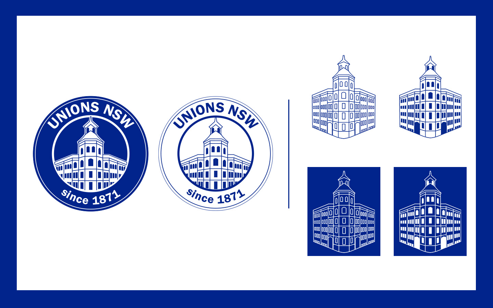
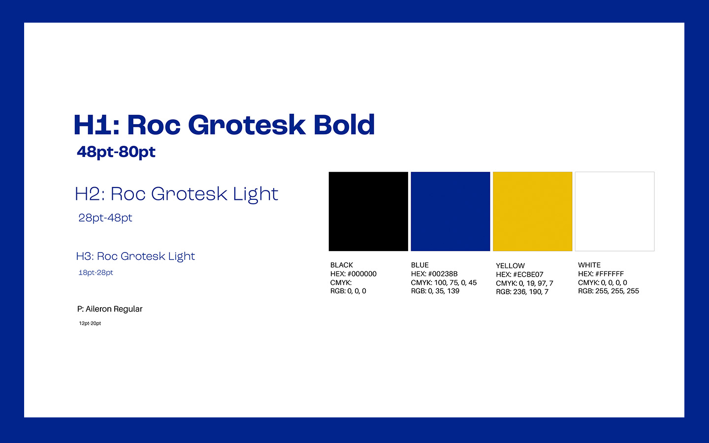
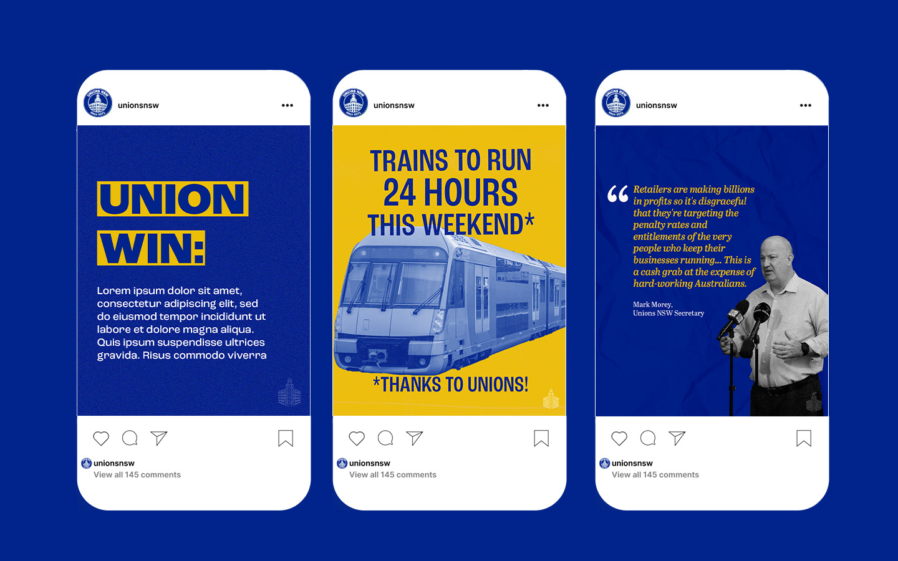
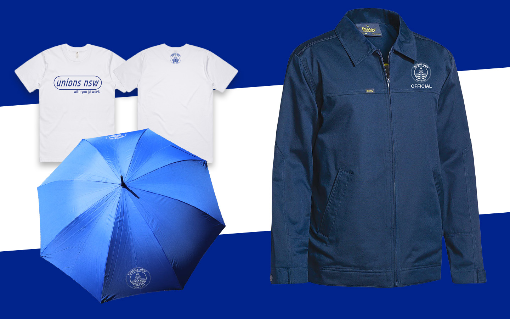
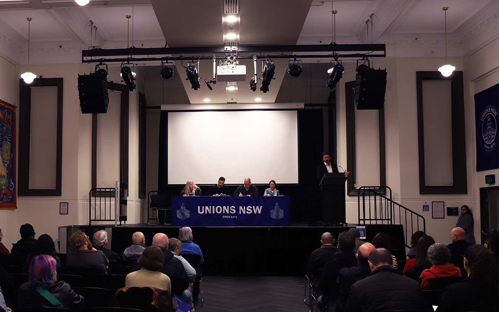

Full rebrand for Unions NSW, the peak union body.
This project involved delving into the union movement's rich visual history and references archival logos and artworks, and is also guided by the visual identities of affiliated unions.
Deliverables included logos and logo marques, print material, 'always on' social content, document design, merchandise and branded textile design.
Logos and logo marques

Fonts and colours

Social media content

Merchandise

**********
